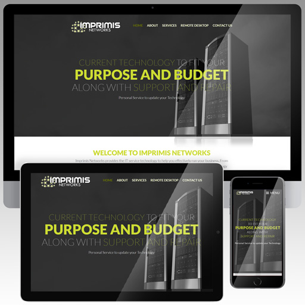

---
layout: default
title: "Web design"
subtitle: "The online portfolio containing web design work for 2D & 3D Production Designer Kate Durr"
categories: Kate Durr, Portfolio, Collection, Works, Web Design
--- 

<!-- Start Body wrapper -->
<div class="wrapper-body body-padding">
  <div class="col-md-12">

     <!-- Start margin -->
     <div class="margin-collection wow fadeIn" data-wow-delay="0.1s">
         <div class="col-md-12">
           <h3 class="heading-inner">Web design</h3>
              <div class="hr"></div>
               <div class="heading-c">
                The internet is essential for building a brand, reaching out to customers, and making your project known. It is the quintessential tool for customers to learn about and buy from brands they trust. Nothing compares to the potential reach of the internet, and I make the most of this. Start expressing your ideas clearly across as many platforms as possible by <a href="contact.html">contacting me!</a></div>
         </div>
         <!-- End text -->

          <!-- Start projects -->
          <div class="col-sm-12">
            <div class="row">

              <!-- portfolio-item -->
              <div class="col-xs-4 grid thumbs">
                <figure class="effect-moses wow fadeIn" data-wow-delay="0.1s">
                  <a href="img/website/infinite-smiles-site.gif">
                  
                    <figcaption>
                      <h2>Infinite Smiles website</h2>
                      <p>A responsive dental site made with Elementor Pro</p>
                    </figcaption>                  
                  </a>
                </figure>
              </div>

              <!-- portfolio-item -->
              <div class="col-xs-4 grid thumbs">
                <figure class="effect-moses wow fadeIn" data-wow-delay="0.1s">
                  <a href="img/website/7-sages-yoga-site.gif">
                  
                    <figcaption>
                      <h2>7 Sages Yoga website</h2>
                      <p>A small, responsive site made with Elementor</p>
                    </figcaption>                  
                  </a>
                </figure>
              </div>

              <!-- portfolio-item -->
              <div class="col-xs-4 grid thumbs">
                <figure class="effect-moses wow fadeIn" data-wow-delay="0.1s">
                  <a href="img/website/liberty-cleaners-site.gif">
                  
                    <figcaption>
                      <h2>Liberty Cleaners website</h2>
                      <p>A responsive dry cleaner site made in Squarespace</p>
                    </figcaption>                  
                  </a>
                </figure>
              </div>

              <!-- portfolio-item -->
              <div class="col-xs-4 grid thumbs">
                <figure class="effect-moses wow fadeIn" data-wow-delay="0.1s">
                  <a href="img/website/cardinal-health-site.gif">
                  
                    <figcaption>
                      <h2>Cardinal Health Market<sup>SM</sup></h2>
                      <p>A large B2B medical supply e-commerce website</p>
                    </figcaption>                  
                  </a>
                </figure>
              </div>

              <!-- portfolio-item -->
              <div class="col-xs-4 grid thumbs">
                <figure class="effect-moses wow fadeIn" data-wow-delay="0.1s">
                  <a href="img/website/imprimis-networks-site.gif">
                  
                    <figcaption>
                      <h2>Imprimis Networks website</h2>
                      <p>A responsive IT website made in Wordpress</p>
                    </figcaption>                  
                  </a>
                </figure>
              </div>
            
            </div><!-- End row -->
          </div>
          <!-- End portfolio feature -->
   
         <!-- Breadcrumbs -->
         <div class="col-sm-12">
           <h3 class="subheading-inner">View other work</h3>
               <div class="crumb">
                <a href="print.html" class="horizontal-list">Print</a> | <a href="game.html" class="horizontal-list">Game</a> | <a href="brand.html" class="horizontal-list">Brand</a></div>
         </div>
         <!-- End breadcrumbs -->

      </div>
      <!-- End margin -->

  </div>
  <!-- End col-md-12 -->

</div>
<!-- End Body wrapper -->